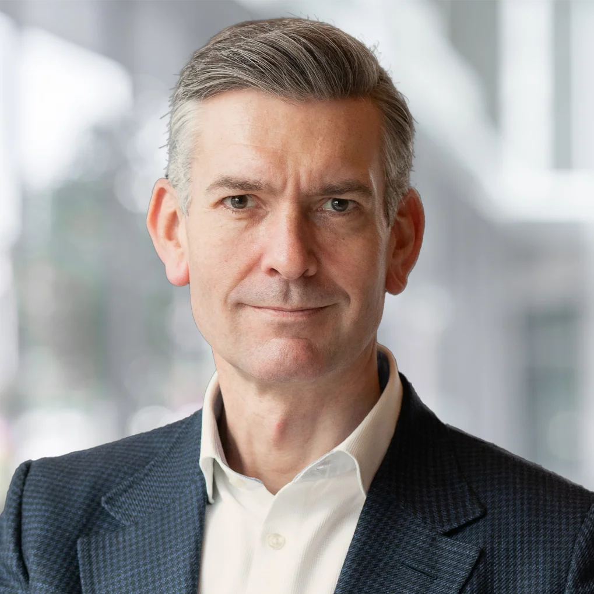

Strategic advisory to FMI operators and their boards
Strategy, operating model and governance for exchanges, CSDs and post-trade infrastructure, including the build and authorisation of new venues.
Substrate works with exchanges, central securities depositories, banks, digital asset firms and regulators on market structure, tokenisation and the supervision of new technology. The firm is led by David Newns, who built and ran the world's first fully regulated blockchain-based exchange and central securities depository.
Substrate takes a small number of engagements where the mandate is material and the access is at board level.
Strategy, operating model and governance for exchanges, CSDs and post-trade infrastructure, including the build and authorisation of new venues.
Issuance, settlement and custody architecture, platform and vendor selection, and the commercial case for moving regulated activity on chain.
Authorisation strategy, supervisory dialogue and policy response. Substrate advises regulated institutions moving into digital assets, crypto-native firms entering the regulatory perimeter, whether by choice or by expansion of the regime around them, and the authorities supervising both.
Non-executive and advisory appointments at regulated market infrastructure and digital asset firms.
Axiology is one of four authorised DLT Trading and Settlement Systems under the EU DLT Pilot Regime, regulated by the Bank of Lithuania and supervised by ESMA.
BPX is an FCA-authorised Multilateral Trading Facility and the only FCA-authorised venue to have passed Gate 1 of the Bank of England and FCA Digital Securities Sandbox.
Advising the executive and supervisory boards of a European financial services regulator on digital asset market structure and the supervision of frontier technology.
The practice is built on twenty-five years operating regulated trading and settlement infrastructure, most recently at the frontier of blockchain-based FMI.
Led the world's first fully regulated blockchain-based exchange and central securities depository, licensed by FINMA. Directed the issuance of more than CHF 2.4 billion in digital securities, the first digital bond issuance on regulated FMI, the first securities settlement in wholesale central bank digital currency in production and the first production interoperability between digital and traditional FMI. Participant in Project Helvetia, the Swiss National Bank and BIS wholesale CBDC initiative.
Board director and rotating Chair of the MAS-regulated institutional crypto derivatives exchange in Singapore, a joint venture of SIX Group and SBI Digital Asset Holdings, live in 2024 with 24/7 trading in calendar and perpetual futures.
Ran Currenex and FXConnect globally, ranked the largest multi-dealer FX platform in Euromoney's 2021 survey. CEO of two MiFID II Multilateral Trading Facilities and a CFTC-registered Swap Execution Facility. Designed State Street's institutional digital custody blueprint.
Contributor to work at IOSCO, the OECD, the Financial Markets Standards Board, the Global Blockchain Business Council and the FX Professionals Association.

David Newns has spent his career building and running regulated electronic trading and settlement infrastructure. As CEO of SIX Digital Exchange he was the first executive globally to lead a fully regulated end-to-end digital asset platform spanning issuance, trading, custody and settlement, recognised by FINMA as a key person subject to fit-and-proper approval. Before SDX he spent two decades at State Street and Currenex scaling institutional FX venues to global market leadership. He holds an MA from the University of Cambridge and works with clients across the UK, Europe, Switzerland and Asia.